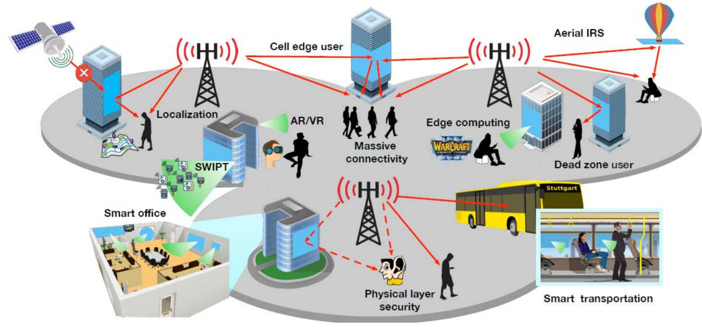
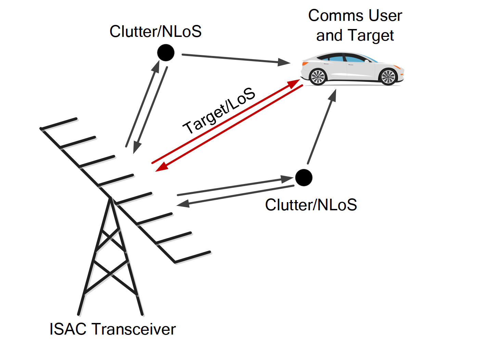
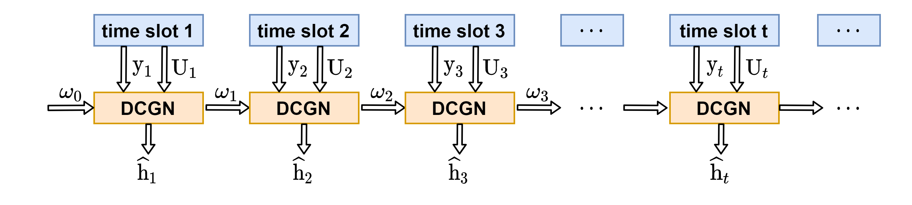
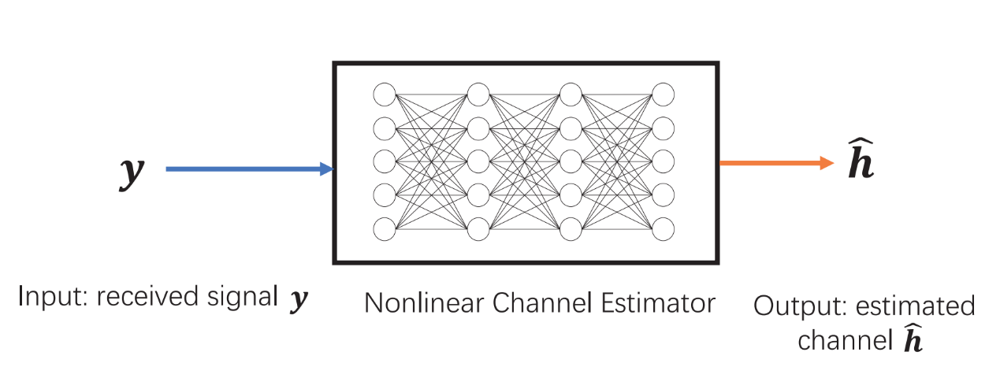

RESEARCH
Our research lab mainly include but not limited to:
Wireless Communication
Integrated Sensing and Communication
Signal Processing
Machine Learning
Deep Learning
Reconfigurable Intelligent Surface (RIS) for Next Generation Network
As a new type of equipment, RIS can artificially control the phase of reflected waves, so as to construct an ideal wireless transmission environment. Therefore, RIS is also attracting attention as a potential technology for 6G.
Passive information modulation problem in RIS-assisted wireless communication system. This topic aims to study how to make RIS modulate additional information in reflected waves without affecting the original communication. Research on this topic provides a new solution for low-rate wireless transmission networks.
Channel estimation using traditional algorithms in RIS assisted wireless communication system scenarios. Research on this topic is the basis for the application of RIS in wireless communications. By abstracting the channel model, we aim to find an algorithm with lower complexity, higher accuracy, and better scene versatility for channel estimation in RIS scenarios.
|  |
[1]. Q. Wu, S. Zhang, B. Zheng, C. You, and R. Zhang, “Intelligent reflecting surface aided wireless communications: a tutorial,” submitted to IEEE Transactions on Communications (Invited Paper)
Integrated Sensing and Communications (ISAC)
ISAC is expected to considerably improve spectral and energy efficiencies, while reducing both hardware and signaling costs, since it attempts to merge sensing and communication into a single system. Waveform design plays a key role in ISAC systems, which mainly contain the following types.
Non-Overlapped Resource Allocation：It is straightforward to see that S&C can be scheduled on orthogonal/non-overlapped wireless resources, such that they do not interfere with each other. This could be realized over temporal, spectral, or spatial domains, which is known as time-division ISAC, frequency-division ISAC, and spatial-division ISAC, respectively.
Fully Unified Waveform: The most tightly coupled one (fully unified waveform). The fully unified ISAC waveforms are generally designed following three philosophies, namely, sensing-centric design, communication-centric design, and joint design.
|  |
[2]. F. Liu, Y. Cui, C. Masouros, J. Xu, T.-X. Han, Y. C. Eldar, and S. Buzzi, “Integrated Sensing and Communications: Towards Dual-functional Wireless Networks for 6G and Beyond”, submitted to IEEE Journal on Selected Areas in Communications.
Online Channel Estimation in MIMO Systems
Online channel estimation in MIMO system
In a massive MIMO system, accurate channel estimation is essential to reap the massive MIMO gain. Traditional channel estimation (CE) methods can lead to extremely troublesome optimization problem, which is hard to solve and requires huge computational cost. Deep learning-based channel estimation can reduce computational cost. However, the supervised DNN-based CE algorithms require the knowledge of ground truth channel, which is hard to obtain in practical system and unsuitable for online channel learning where channels can change quickly. Therefore, we want to propose a online channel estimation model which does not require pre-training over large datasets, nor does it need the true channel label to reduce computational cost and adapt to changing channel environment.
|  |
Online Channel Estimation
Channel estimation is a very important problem in communication system. In addition to some traditional solutions, it is also a hot topic to use machine learning methods for channel estimation nowadays. However, most of these implementations use a trained network, that is, offline. This scheme cannot well adapt to new scenarios, so online algorithm can be considered. The advantage of this is that it can adapt to a variety of scenes, but with it comes the difficult nonlinear problems, which comes from the nonlinear amplifier or quantization at the transmitter or receiver. For the online algorithm, there is no large amount of training data, so such nonlinearity needs to be considered separately. The difficulty lies in the need to design the loss function of the system under the condition of considering nonlinearity, which is independent of the true data, that is to say, the scheme does not have the access to the ground truth.
|  |
Self-supervised Learning Applied to Wireless Communications
Machine learning (ML), especially deep learning, has shown very good performance in many fields. In the field of wireless communication, it is regarded as a promising solution to difficult communication problems such as channel decoding, radio signal classification and channel estimation. In many existing works, researchers mostly use supervised learning, however, this method requires a large amount of data with human provided-labels. Based on the above introduction, we consider using self-supervised learning to solve the problems in wireless communication, where the data itself provides the supervision for a learning algorithm.
 |